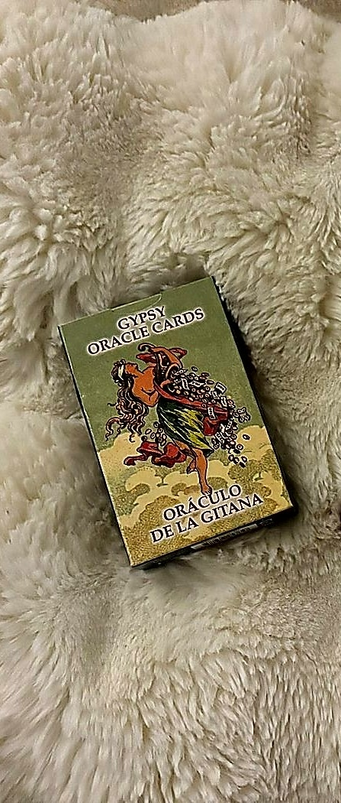
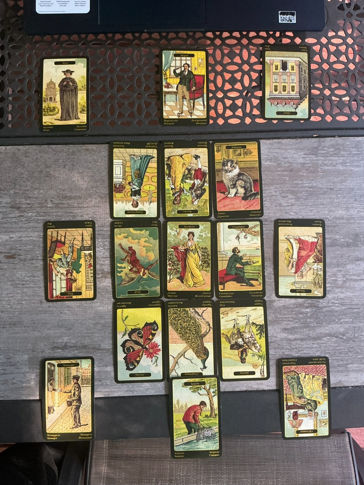
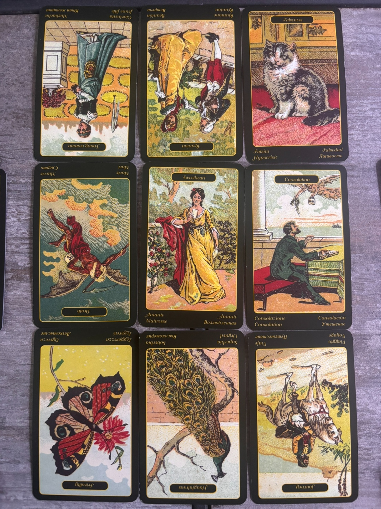

Near & Far: The Week Around Natalie
sibilla della zingara · near/far box, significator centered

The story closest to you

Let's start where the deck says to start, right around you. The top row of your near box is Young Woman reversed, Reunion reversed, and Falseness upright. Young Woman reversed isn't just "youthful energy," she's immaturity, unreliability, someone or something not developed enough to hold weight yet. She sits to the left of center, which in this spread means past, so this is someone or something recently in your orbit. Next to her, Reunion reversed says whatever coming-back-together was supposed to happen, an old friend, family, an ex, a group, isn't landing. Either the reconciliation stalls out or someone's dragging their feet on the conversation that would actually clear the air. And then Falseness lands upright, full strength, not softened by a reversal. That's the tell. When I read these three left to right, then treat Reunion as the pivot the outer two are framing, I get this: whatever's stopping the reunion from happening isn't innocent. It's flanked by immaturity on one side and outright deception on the other. Someone isn't being straight with you about why this reconciliation isn't happening.
The middle row is where the significator sits, so I want to slow down here. Death reversed to the left, Sweetheart at center as you, and Consolation upright to the right. This row runs straight through you, Natalie, literally through the card standing in for your person. Death reversed in the past position isn't a gentle closing of a chapter, it's the harsher reading this card carries reversed: a disruptive ending, something that dragged on longer than it should have, possibly caused with real intent behind it rather than just happening on its own. Sweetheart at center is you, and I want to be upfront that just because your significator card happens to be a romance-coded card doesn't mean this whole week is about your love life. She's standing in for you as a person, full stop. What's actually going on comes from what flanks her. And what flanks her on the future side is Consolation, upright, unclouded. Comfort is coming. Something is going to ease what that ending left behind.
Bottom row of the near box is Frivolity reversed, Haughtiness reversed, and Journey reversed. All three reversed, and none of them landing in a clean positive frame here. Frivolity reversed is usually the "good" reversal, the end of a careless or reckless stretch, someone getting serious. But sitting next to Haughtiness reversed, which is pride getting humbled, confidence knocked down, possibly a loss tied to someone's ego, and Journey reversed, which is stalled plans and lost momentum, I read this bottom row as an undertow running beneath the more visible story above it. Something lighthearted is ending, but it's ending because somebody's pride took a hit and nothing is moving forward right now.
The near box tells you the ending already happened, you're standing in the middle of it, and relief is coming, but there's a stalled reconciliation and a dishonest party sitting right next to that relief.
What's operating behind and around it
The far ring doesn't just repeat the near box, it explains it. Directly above your near top row sits Priest upright, Despair upright, House reversed. Priest here is authority, an official matter, or someone telling you what's right and wrong, and it could just as easily be a spiritual reminder that there's more going on than the material mess in front of you. Despair, and I want to be precise about this card because its full name is "desperate due to jealousy," not generic sadness. This is a jealousy-driven crisis, wounded ego acting out. House reversed is a family or domestic structure destabilizing, fights, instability, foundations shaking. Stacked over Young Woman(R), Reunion(R), and Falseness, this tells me the stalled reunion and the person being dishonest with you aren't operating in a vacuum. There's a jealousy problem underneath it, and it's touching something as close to home as House.
The middle far row is the strange one, because there's deliberately no card in the far-middle-center. What sits there instead is Thief reversed on the left, over Death reversed, and Thought reversed on the right, over Consolation. I think Thief reversed is doing exactly what it looks like it's doing: it's explaining Death. The ending you went through wasn't just an ending, something was taken. A betrayal, a loss of trust, something that came in sideways and caused the disruption. Reversed, the theft has already happened, it's not still in progress, which means what's left is recovery and the lesson in it, not continued defense against more loss. On the other side, Thought reversed sitting behind Consolation tells me the comfort that's arriving doesn't come free of static. Reversed Thought is stalled thinking, second-guessing, maybe overanalyzing whether the good thing landing is real or whether you're allowed to trust it. And the gap itself, no far reflection of Sweetheart, matters too. Whatever is happening at the edges of your week this time, it isn't showing you a distorted double of yourself. It surrounds you without duplicating you.
The far bottom row is Messenger upright, Surprise upright, Old Woman reversed. That's two genuinely good cards and one troublemaker. Messenger says news is coming, plainly, and the person delivering it might matter as much as what they say. Surprise says it's a pleasant one, a lucky break, more reward than the effort put in would suggest. But Old Woman reversed at the far end raises the exact question I want to sit with: is this an old, meddling energy trying to interfere with the message before it lands clean, delaying it or souring it, or is the news itself simply going to arrive a little outdated, a little late? Sitting under your bottom row of humbled pride and stalled travel, I lean toward reading her as interference rather than as the news itself. Something old and stuck is standing between the messenger and you.
The far ring names the cause behind the near box's ending, a theft already completed, and warns that the good news heading your way has to get past something old and meddling first.
What's visible versus what's running underneath
Reading the conscious layer means stacking the center row through you with the two top rows above it, treating all three as things you're aware of or will become aware of, nothing hidden here even if it's uncomfortable. The spine is Death(R) into you into Consolation, an ending you already lived through, relief on its way. Layered onto that is the near top row's interpersonal drama, the unreliable young woman, the stalled reunion, the falseness sitting next to it. And floating above both is the far top row naming the bigger forces at work, an authority or legal or spiritual matter, a jealousy crisis, a shaky household. Read together, this conscious layer says: you know an ending happened, you're aware something's off in a stalled reconciliation, and if you look up a level you can see the jealousy and instability actually driving it. None of this is buried. It's all findable if you're willing to look at it squarely.
The unconscious layer is the near bottom row paired with the far bottom row, Frivolity(R), Haughtiness(R), Journey(R) running underneath Messenger, Surprise, Old Woman(R). This is the part of the week doing work below the surface. Pride getting humbled, momentum stalling out, while at the same time a real message and a real surprise are trying to reach you, slowed down by something old and stuck. If the conscious layer is the story you can narrate to a friend, this bottom layer is the quieter mechanism actually running it, someone's ego taking a hit while good news gets held up in transit.
What you can see clearly is the ending and the falseness. What's running quietly underneath is a humbled ego slowing down a genuinely good piece of news.
Past, present, and future inside the near box
The left column, past, is Young Woman(R) over Death(R) over Frivolity(R). That's an unreliable or unformed presence, tied to a hard ending, tied to a carefree stretch also winding down. The past you're carrying into this week isn't one clean event, it's three overlapping ones: something immature that didn't hold up, a real loss, and a lighter period closing out alongside it.
The center column runs straight through you again, and I want to name that plainly, this is the second time in this spread that a full line passes directly through your significator. Reunion(R) over Sweetheart over Haughtiness(R). A reconciliation that isn't happening, you in the middle of it, and pride getting humbled beneath you. If I had to name the emotional core of this whole week in one line, it's this column: something wants to come back together, it's not happening cleanly, and somebody's ego, maybe not even yours, is taking the hit for it.
The right column, future, is Falseness over Consolation over Journey(R). Deception gets named clearly, comfort follows it, but Journey(R) says don't expect the practical, forward-moving part of your life to pick up speed just because the emotional weight is lifting. The relief is coming before the momentum is.
The center column is the one to watch, it runs straight through you, and it says the reunion stalls while someone's pride absorbs the impact.
Two long roads, both through you
The first diagonal runs Priest, far top left, into Young Woman(R), into you, out through Journey(R), into Old Woman(R) at the far bottom right. Read as one continuous story, it starts with an authority or moral question, passes through something immature and unready, goes straight through you, and exits into stalled forward movement shadowed by something old and stuck. This diagonal has a heaviness to it, it reads almost like a long pattern, immaturity to you to stagnation to an old interfering presence, like whatever hasn't matured yet is being held back by something that itself refuses to update.
The second diagonal runs House(R), far top right, into Falseness, into you, out through Frivolity(R), into Messenger at the far bottom left. This one has a different shape entirely. It starts with domestic instability, moves through outright deception, passes through you, and exits into Frivolity(R), which here reads as the end of carelessness, someone finally getting serious, landing on Messenger, upright, real information arriving. Where the first diagonal trails off into stagnation, this one actually resolves into something moving and true.
Both of these cross directly through your significator, which I think is worth sitting with. You're not off to the side of either story, you're the hinge both of them turn on. One diagonal says the old pattern keeps stalling things out. The other says the seriousness returning and the real message arriving both run through you too. That tension, one road pointing at stagnation and one pointing at resolution, both passing through the same person, is exactly the kind of thing I want to carry into the synthesis rather than smooth over.
Two long roads cross at you this week, one trailing into an old stuck pattern, the other resolving into real news, and you're the point where both decide which way they lean.
Synthesis
✦ what this week is actually asking of you
The theft already happened, the relief is already on its way
Here's the thing I want you to walk away holding onto more than any single card. This week isn't handing you a new crisis. It's asking you to finish reckoning with one that's already over. Death reversed sitting behind you with Thief reversed directly behind it tells me the ending you're still carrying wasn't just something that happened to you, something was taken, a betrayal, a piece of trust, maybe someone's word. And it's reversed, which in this deck's own logic means the theft is complete, not ongoing. You're not still bleeding out from an open wound, you're in the part where you learn what the loss taught you and start actually recovering. That's a different task than staying braced for another hit. I don't think you need to be defending yourself this week so much as you need to let yourself actually process what already happened.
Because right alongside that, genuinely good things are moving toward you. Consolation upright, Surprise upright, Messenger upright, that's three separate cards in this spread all independently saying relief, reward, and real news are coming. That's not a small thing in a 17-card pull with this many reversals. But none of them arrive uncomplicated. Consolation rides in with Thought reversed right behind it, so even the comfort comes with a "wait, is this real, can I trust this" undertow, some overthinking that wants to pick the good news apart before letting it land. And the Messenger and Surprise at the far bottom sit next to Old Woman reversed, which asks the same kind of question from a different angle: is something old and stuck trying to interfere with this news before it reaches you clean. I think both of these are true at once. The good thing is real. And something in you, or someone near you, is going to try to complicate the receiving of it. Your job isn't to distrust the good news, it's to notice when the overthinking or the interference shows up and not let it talk you out of what's actually arriving.
Then there's the piece that isn't about you processing an old wound at all, it's about someone actively not being straight with you right now. Young Woman reversed, Reunion reversed, and Falseness upright, stacked with Despair upright and House reversed above them, point at a stalled reconciliation that's tangled up with jealousy and some shakiness at home, and a person in the middle of it who isn't telling you the whole truth. I'll say what the notes I jotted down while pulling this were already circling, quietly, on the side, keep your eyes open for whoever's playing this role. Whether it's platonic, professional, or romantic, Falseness landing upright and unsoftened right after a Reunion that's reversed is not a subtle placement. Somebody is dangling the idea of coming back together while not actually meaning it, or while hiding something that would change how you feel about the offer.
And underneath all of it, quite literally in the row the deck marks as unconscious, somebody's pride is taking a hit and momentum has stalled, Haughtiness reversed and Journey reversed sitting right where the significator's own column runs through. I noticed both extended diagonals cross directly through you and pull in two different directions, one trailing off into an old stuck pattern by way of Old Woman reversed, the other resolving cleanly into a real message by way of Messenger upright. I don't think the deck is contradicting itself here, I think it's telling you the outcome genuinely isn't settled yet. There's a version of this week where you get pulled into the stalled, stuck, old-pattern version of the story, chasing the false reunion, staying tangled in the jealousy and the overthinking. And there's a version where you let the theft stay finished, let the comfort and the real news in even with some static on the line, and let the person being false to you get exposed rather than chased. Both roads run through you. Which one you're standing on by the end of this week has more to do with what you choose to give your attention to than with anything the cards are locking in place.
The loss already happened and doesn't need defending against anymore, the good news is real even with static on the signal, and the reunion worth wanting isn't the one being offered to you right now.
Both extended diagonals and the center row and center column all pass through the significator this time, which is unusually concentrated for this layout. When that much of a spread's structural weight converges on one card, I read it as a signal that the querent isn't a passive bystander to the week's events, she's the actual hinge point multiple storylines are turning on, which is why the synthesis leans on agency and attention rather than prediction.